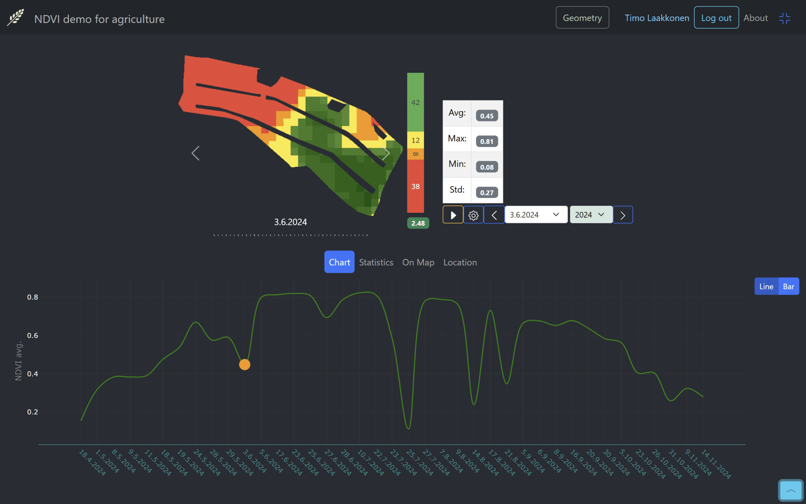
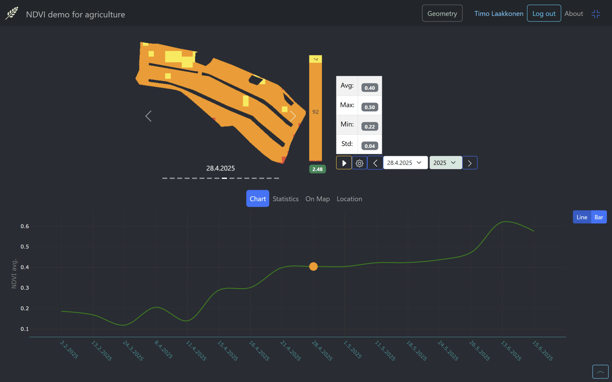
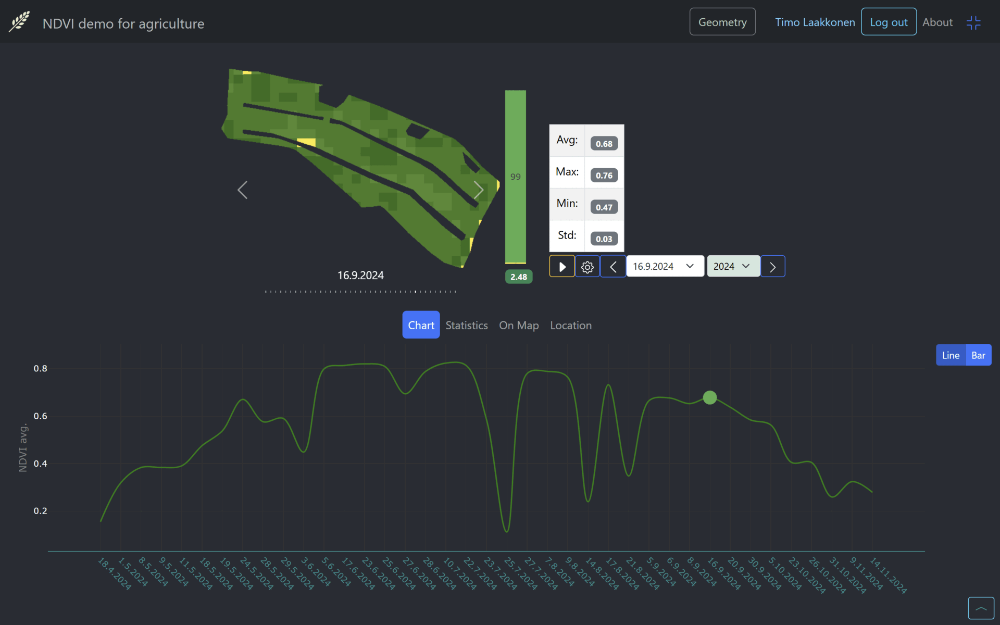
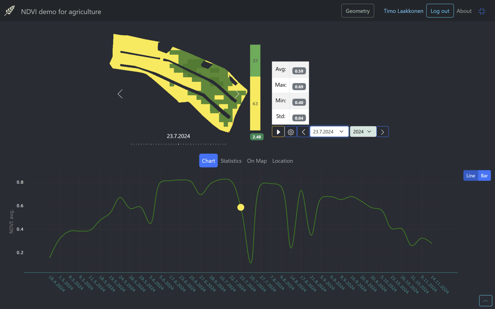
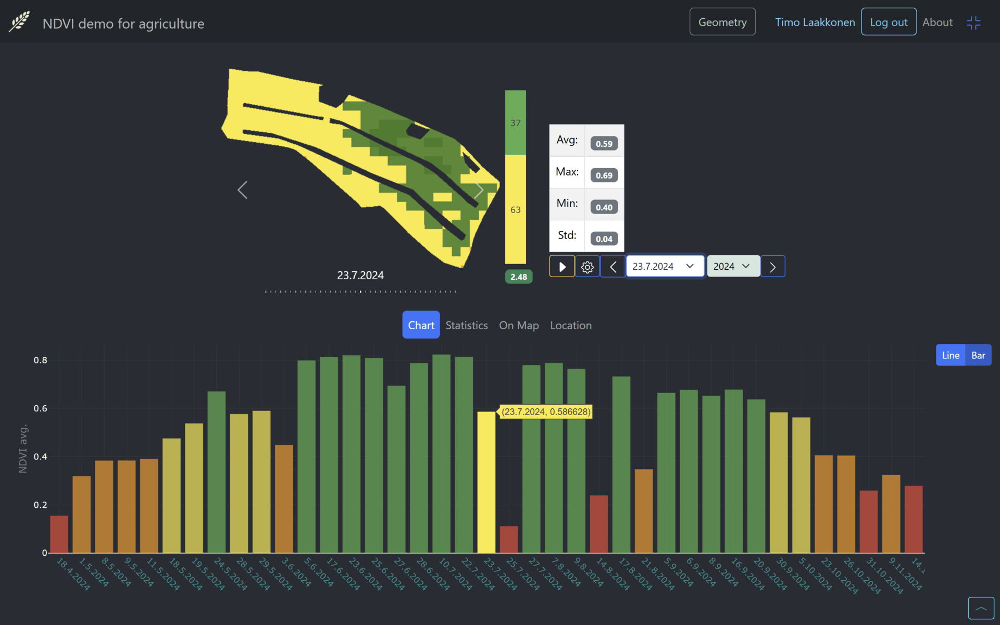

Select an NDVI image and statistics for a specific date of the currently selected area of interest.
You can choose the date in different ways
By Swiping
To navigate through the images, swipe left or right on the image area or use the surrounding arrow buttons.

From dropdown

From filmroll
On bottom right there is a button which will open film view, where all the images are shown as a film images. You can select the image to be showm of the specifig date.

From statistics view

From bar chart
When the bar mode is selected in chart view. By touching the bar of the date, the bar for the selected date is highlighted.
